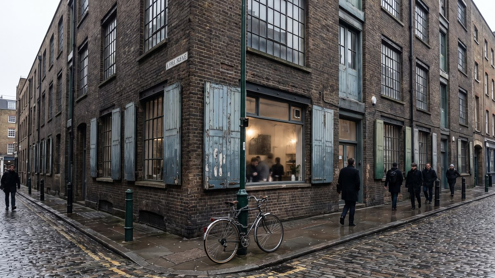
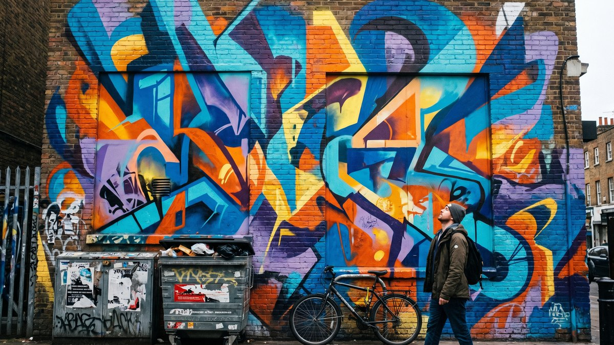
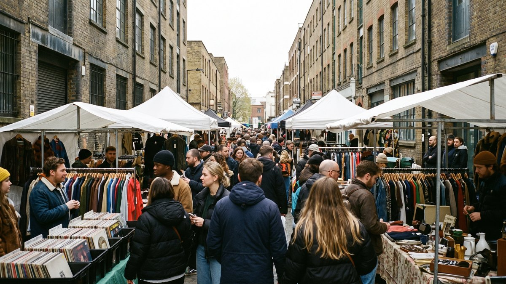
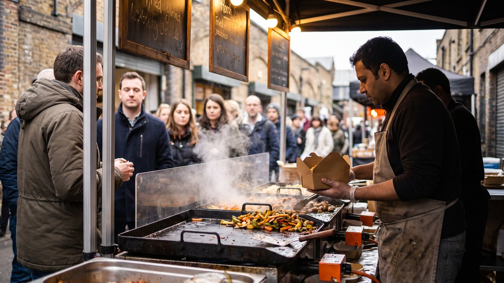
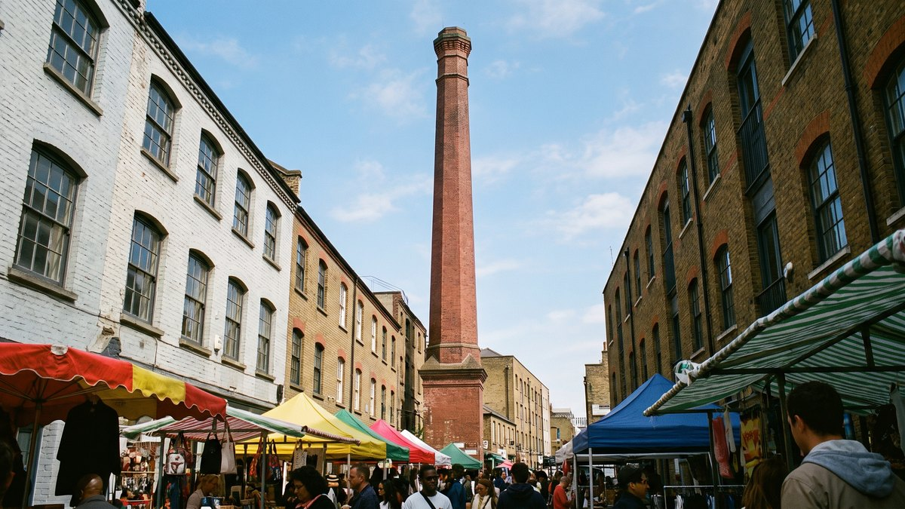

שורדיץ' הוא האזור שבו לונדון מפסיקה להצטלם ומתחילה לחיות. אין כאן ארמון, אין כאן משמר מלכותי, ואף אוטובוס תיירים לא עוצר בכיכר המרכזית, כי אין כיכר מרכזית. יש קירות מצוירים שמתחלפים, שווקים שפועלים בימים מסוימים בלבד, ורחוב אחד שבו אפשר לאכול בייגל בשלוש לפנות בוקר.
בחרו כיוון וקבלו יום מוכן במתכנן, שאפשר לגרור, להחליף ולהוסיף עליו.
חמש שניות מהרחובות של שורדיץ'. בלי קריינות, בלי מוזיקה.
מה זה שורדיץ' ולמה האזור הזה נראה אחרת

שורדיץ' יושב ברובע הקני, ממש על הגבול הצפוני של הסיטי, הרובע הפיננסי. המרחק בין מגדלי הזכוכית של הבנקים לבין מחסני הלבנים המצוירים הוא שבע דקות הליכה, וזה בערך כל מה שצריך לדעת על האזור.
הסיפור מתחיל מוקדם בהרבה ממה שרוב האנשים מניחים. ב-1576 נבנה כאן המבנה הראשון באנגליה שנועד מלכתחילה להיות תיאטרון, ופשוט קראו לו The Theatre. שנה אחר כך נבנה בקרבת מקום תיאטרון שני, הקרטן. הלהקה של שייקספיר הופיעה בו, ויש הסכמה רחבה שרומיאו ויוליה והנרי החמישי הוצגו שם לראשונה. הכל קרה כאן עשרות שנים לפני שהגלוב נבנה בגדה הדרומית. שרידי הקרטן נחשפו בחפירות ארכיאולוגיות בין 2011 ל-2016 מתחת לרחוב צדדי בשם Hewett Street, והוחלט להשאיר אותם במקומם ולשמר אותם.
אחרי התיאטראות הגיעו הגלים. במאה השבע עשרה התיישבו כאן ההוגנוטים, פרוטסטנטים צרפתים שברחו מרדיפות דתיות והביאו איתם את תעשיית המשי. בתי האורגים שלהם עדיין עומדים ברחובות Fournier Street ו-Princelet Street, ואפשר לזהות אותם לפי חלונות עליית הגג הרחבים במיוחד, שנבנו כך כדי להכניס מספיק אור לנול.
ואז מגיע המבנה שמספר את כל הסיפור לבדו. בפינת בריק ליין עומד בניין שנבנה ב-1743 ככנסייה הוגנוטית בשם La Neuve Eglise. ב-1809 הוא הפך לקפלה מתודיסטית. ב-1898 הוא הפך לבית כנסת ושירת את הקהילה היהודית הענקית של האיסט אנד. ב-1976, אחרי שהיהודים עברו לפרברים והגיעה הגירה מבנגלדש, הוא הפך למסגד. אותו בניין, ארבע קהילות, כמעט שלוש מאות שנה. אין בלונדון הדגמה טובה מזו לאיך העיר הזאת עובדת.
השכבה האחרונה היא הכי מוכרת. שנות התשעים והאלפיים הביאו לכאן אמנים, סטודיואים וגלריות, ומ-2008 בערך גם חברות טכנולוגיה שהצטופפו סביב מחלף Old Street, שקיבל את הכינוי סיליקון ראונדאבאוט. המחסנים נשארו, מה שקורה בתוכם השתנה לגמרי.
למי האזור הזה מתאים, ולמי פחות
אין בלונדון ריכוז כזה של קירות מצוירים בטווח הליכה. הרחובות עצמם הם האטרקציה.
אוכל רחוב מכל העולם, במחירים שלא תמצאו בווסטמינסטר.
חנויות יד שנייה, תקליטים ובגדים משומרים בכמות אמיתית.
מי שכבר עשה את הבאזז והביג בן ומחפש לונדון אחרת.
ולמי זה פחות מתאים. מי שנוסע ללונדון לחמישה ימים ראשונים בחיים, עם רשימה של מוזיאונים וארמונות, לא חייב את שורדיץ'. הוא לא ייכשל בטיול בלעדיו. מי שמסתובב עם עגלה יגלה שהמדרכות צרות ושבשוק בימי ראשון פשוט אין מקום לעבור. ומי שרגיש לרעש צריך לדעת שבערבי שישי ושבת האזור הופך לאחד ממרכזי הבילוי הרועשים בעיר. אם זה נשמע לא מתאים לכם, סדרת האזורים שלנו מכסה גם אזורים שקטים ומסודרים הרבה יותר.
האווירה, ואיך היא משתנה לפי היום
אין דבר כזה שורדיץ' אחד. יש לפחות שלושה, והם תלויים לגמרי בשעה וובאיזה יום הגעתם.
אמצע השבוע בבוקר
שקט להפתיע. בתי הקפה מלאים באנשים עם מחשבים ניידים, השווקים המקורים פועלים בקצב נמוך, ואפשר לצלם קיר שלם בלי אף אדם בפריים. זה הזמן הטוב ביותר לצילום ולמי שלא אוהב המונים.
יום ראשון
היום העמוס בשנה, כל שבוע מחדש. שוק בריק ליין פועל במלוא הקיטור, שוק הפרחים בקולומביה רוד פתוח, וספיטלפילדס גם הוא בשיאו. הרחוב מלא בריחות של אוכל רחוב ובאנשים שנעים בזרם אחד. זו החוויה השלמה, וזו גם החוויה הצפופה ביותר.
ערב
האזור מתמלא במי שיוצא לבלות. ברים, מוזיקה חיה וקבוצות גדולות. אם באתם לצלם, זה הזמן ללכת. אם באתם לצאת, זה הזמן להגיע.
🎨 אמנות הרחוב, ואיפה היא באמת נמצאת

הדבר הראשון שצריך להבין הוא שאמנות הרחוב בשורדיץ' היא לא תערוכה קבועה. עבודות נצבעות מחדש, מכוסות ונעלמות. יצירה שראיתם בסרטון יוטיוב משנה שעברה כנראה כבר לא שם. זה לא באג, זה בדיוק הרעיון.
לכן במקום לרדוף אחרי יצירה ספציפית, עדיף ללכת לרחובות הנכונים ולראות מה יש שם היום. אלה הרחובות שכדאי לכסות, וכולם בטווח הליכה של עשר דקות זה מזה:
- Rivington Street, כולל המנהרה והחניון שבצידה, אחד הריכוזים הצפופים באזור
- Redchurch Street, קירות גדולים לצד חנויות עיצוב
- Hanbury Street, כאן נמצאת העגור הענקית של האמן ROA משנת 2010, אחת העבודות הוותיקות ששרדו
- Fashion Street ו-Princelet Street, סמטאות שקטות יותר עם עבודות קטנות
- Sclater Street ו-Chance Street, פחות מתויירות ולעיתים מפתיעות
- הסמטאות שמסביב ל-Brick Lane עצמו, ולא רק הרחוב הראשי
איך מצלמים את זה נכון
- שעה. בוקר מוקדם, לפני עשר. אחר כך גם האור קשה וגם הרחוב מלא.
- יום. שלישי עד חמישי. בסופי שבוע כמעט בלתי אפשרי לצלם קיר בלי אנשים.
- מרחק. רוב הקירות גדולים והרחובות צרים. עדשה רחבה או מצב הפנורמה בטלפון יעשו את ההבדל בין תמונה שלמה לחצי ציור.
- מה שמסביב. התמונות הטובות כאן הן לרוב לא של הקיר לבדו, אלא של הקיר עם אדם, אופניים או פח אשפה בפריים. זה מה שנותן קנה מידה.
- מכוניות. ברחובות הצדדיים חונים רכבים ממש מול הקירות. בבוקר מוקדם יש פחות.
🛍️ השווקים, ומתי כל אחד מהם באמת פתוח

שורדיץ' והסביבה הם ריכוז השווקים הצפוף בלונדון, וזו גם הסיבה המרכזית שבגללה היום שבו תגיעו חשוב יותר מהשעה. שוק סגור הוא רחוב ריק.
שוק ספיטלפילדס הישן
השוק המקורה הגדול באזור, ומקום שבו מתקיים מסחר כבר מאות שנים. הבניין הנוכחי הוא מסוף המאה התשע עשרה, והוא עבר שני שיפוצים גדולים בעשורים האחרונים. היום זה מתחם מקורה עם דוכני עיצוב, אופנה עצמאית, תכשיטים ואוכל, ועם מסעדות קבועות מסביב.
זה גם השוק היחיד באזור שפועל שבעה ימים בשבוע, מה שהופך אותו לתשובה הבטוחה אם הגעתם ביום שבו השווקים האחרים סגורים. וזה גם השוק המקורה, כלומר הפתרון ליום גשום.
| יום | שעות | הערה |
|---|---|---|
| שני, שלישי, רביעי, שישי | 10:00 עד 20:00 | שעות ארוכות במיוחד |
| חמישי | 08:00 עד 18:00 | נפתח מוקדם, יום הוינטג' והעתיקות |
| שבת | 10:00 עד 18:00 | עמוס |
| ראשון | 10:00 עד 17:00 | העמוס ביותר |
שעות החנויות והמסעדות בתוך המתחם יכולות להיות שונות משעות השוק עצמו.
בריק ליין
לא שוק אחד אלא כמה שווקים שיושבים זה לצד זה לאורך הרחוב ובתוך מתחם מבשלת טרומן הישנה. המבשלה הפסיקה לייצר בירה בסוף שנות השמונים, והמחסנים הפכו לחללי אירועים ולשווקים. ברוב סופי השבוע פועלים כאן במקביל שוק עם יותר ממאתיים דוכנים, אולם אוכל גדול ושטחי וינטג' ויד שנייה.
- שבת, בערך 11:00 עד 18:00
- ראשון, בערך 10:00 עד 18:00, וזה היום הגדול
מה שמייחד את בריק ליין הוא התמהיל. בתוך מאה מטרים יש דוכן אתיופי, דוכן ונצואלני, בגדים משנות השמונים ותקליטים. זה גם המקום שבו הכי כדאי לאכול, יותר מאשר לקנות.
שוק הפרחים בקולומביה רוד
ימי ראשון בלבד, משמונה בבוקר עד שלוש בערך, וזה הכל. אם תגיעו ביום שני, תמצאו רחוב מגורים שקט עם כמה חנויות קטנות. השוק עצמו הוא רחוב אחד צר שנסגר לתנועה ומתמלא בדוכני פרחים וצמחים, עם מוכרים שצועקים מחירים בקול. גם מי שלא קונה שום דבר נהנה מזה, וזו אחת הסצנות הכי לונדוניות שיש.
המרחק מבריק ליין הוא כרבע שעה הליכה צפונה. הטיפ המרכזי כאן הוא להגיע לפני תשע וחצי, כי אחרי עשר הרחוב הופך לפקק אנושי שקשה לזוז בו.
🍜 איפה אוכלים, ומה לא לפספס

אם יש דבר אחד שבשבילו שווה להגיע לשורדיץ' גם אם לא מעניינת אתכם אמנות, זה האוכל. הריכוז והמגוון כאן טובים יותר מכמעט כל אזור אחר בעיר, והמחירים נמוכים משמעותית ממה שתשלמו על ארוחה מקבילה במרכז.
הדבר האחד שאסור לפספס
בייגל בייק, בקצה הצפוני של בריק ליין, פועל מאז 1974 ופתוח עשרים וארבע שעות ביממה, כל ימות השבוע. המנה שבגללה עומדים בתור היא בייגל עם סולט ביף, בשר בקר כבוש שנחתך במקום, עם חרדל וחמוץ. המחיר נמוך משמעותית ממה שאפשר לצפות במרכז לונדון, והתור בסופי שבוע נראה מפחיד אבל זז מהר.
כמה בתים דרומה יושבת חנות בייגל נוספת, מתחרה ותיקה שטוענת שהיא המקורית מ-1855. הוויכוח מי טוב יותר נמשך עשרות שנים ולא ייפתר. שתיהן פתוחות, ואפשר פשוט לנסות את שתיהן.
אוכל הודי ובנגלי
החלק הדרומי של בריק ליין מכונה בנגלה טאון, ולאורכו עשרות מסעדות קארי. חשוב לדעת שני דברים. הראשון, האיכות משתנה מאוד ממקום למקום, וכדאי לבדוק דירוגים ולא רק להיכנס לראשון שרואים. השני, עדיין נהוג שם שאנשים עומדים בפתח ומנסים למשוך אתכם פנימה עם הצעות הנחה. זה לגיטימי ולא מסוכן, פשוט אפשר לומר לא תודה ולהמשיך.
אוכל רחוב בשווקים
בסופי שבוע זו הדרך הטובה ביותר לאכול כאן. מנה בדוכן בשוק תעלה בדרך כלל בסביבות שליש עד חצי ממה שתשלמו על מנה במסעדה במרכז, והמגוון גדול בהרבה. אתיופי, ונצואלני, מלזי, קוריאני ואוכל טבעוני בכמות. הטריק הוא לא להזמין מנה שלמה בדוכן הראשון, אלא לקנות משהו קטן בשלושה מקומות שונים.
בתי קפה ובוקר
שורדיץ' הוא אחד המקומות שהובילו את תרבות הקפה של לונדון, ורמת הקפה כאן גבוהה. סביב רחוב Redchurch ורחוב Rivington יש ריכוז של בתי קפה עצמאיים קטנים שקולים אספרסו בעצמם. ארוחת בוקר במקומות האלה יוצאת בדרך כלל זולה יותר מבמלון, וטובה יותר.
🍽️ סיורי אוכל באזור, והאם הם שווים את זה
שורדיץ' ובריק ליין הם אחד היעדים המבוקשים בלונדון לסיורי אוכל מודרכים, וזו הצעה שהגיונית יותר כאן מאשר ברוב האזורים האחרים בעיר. הסיבה פשוטה. באזור שבו האטרקציה היא רחובות ולא מבנים, מדריך שמכיר את המקום הוא ההבדל בין לראות דוכנים לבין להבין מה אתם אוכלים ולמה הוא נמצא כאן.
סיור טיפוסי נמשך בין שעתיים וחצי לשלוש וחצי, כולל בין חמש לשמונה עצירות טעימה, ולרוב משלב את הסיפור ההיסטורי של הגירת הקהילות לאזור עם האוכל עצמו. המחירים בשוק נעים בדרך כלל בטווח רחב, ורוב הסיורים כוללים את כל הטעימות במחיר.
מתי זה מתאים ומתי לא
למי שמגיע לזמן קצר ורוצה לכסות הרבה, ולמי שמעדיף שמישהו יסביר את ההקשר.
למי שאוהב להסתובב לבד בקצב שלו, ולמי שיש מגבלות תזונה משמעותיות.
אם אתם שוקלים סיור, שלוש בדיקות לפני שסוגרים. ודאו שהסיור מתקיים ביום שבו השווקים פתוחים, כי סיור אוכל בבריק ליין ביום שלישי הוא לא אותו דבר. בדקו מראש אם המדריך יכול להתאים את העצירות למגבלות תזונה שיש לכם, כי חלק מהעצירות הן בשריות באופן מובהק. ובדקו כמה משתתפים יש בקבוצה, כי קבוצה של יותר מחמישה עשר אנשים בסמטה צרה בבריק ליין ביום ראשון היא חוויה פחות נעימה.
👨👩👧 שורדיץ' עם ילדים
נאמר את זה בכנות. שורדיץ' הוא לא אזור שנבנה בשביל ילדים, ואם מדובר בילדים קטנים מאוד עם עגלה, יש אזורים נוחים יותר בעיר. המדרכות צרות, אין פארק גדול במרכז האזור, וביום ראשון הצפיפות בשוק אמיתית.
ובכל זאת, אם אתם כבר באזור או שיש לכם ילדים גדולים יותר, יש כאן כמה דברים שעובדים ממש טוב.
- ציד אמנות רחוב. זו הפעילות הכי טובה כאן לילדים מגיל שש ומעלה. תנו לכל ילד לצלם חמישה קירות ולבחור את המנצח בסוף. זה הופך הליכה סתמית למשחק, וזה בחינם.
- Young V&A בבת'נל גרין, המוזיאון של מוזיאוני ויקטוריה ואלברט שמיועד לילדים. הכניסה חופשית לגמרי, הוא פתוח כל יום מעשר בבוקר, והגלריות מתחילות להיסגר בסביבות חמש. יש בו אזורי משחק אמיתיים ולא רק ויטרינות. זה כרבע שעה ברגל או שתי תחנות בתחתית מהאזור, וזה ההצלה של יום גשום עם ילדים.
- חוות ספיטלפילדס ברחוב Buxton Street, חווה עירונית קטנה עם חיות, גינות ואזור ישיבה. הכניסה חופשית, והיא פתוחה משלישי עד ראשון, בדרך כלל מעשר בבוקר עד ארבע או ארבע וחצי אחר הצהריים לפי העונה. זה קרוב מאוד לבריק ליין ומהווה הפסקה מושלמת באמצע הליכה.
- אוכל. דוכני האוכל בשווקים מנצחים כל תפריט ילדים במסעדה, כי כל אחד בוחר משהו אחר ואף אחד לא מתלונן.
🚶 מסלול של חצי יום, מוכן להליכה

המסלול הזה בנוי ליום ראשון, שהוא היום המלא ביותר, ולוקח בערך שש שעות בקצב נוח, כולל ההליכה לתמזה בסוף. אפשר לעשות אותו גם בשבת עם שינוי קטן, וגם באמצע השבוע בלי שני השווקים. מי שרוצה גרסה קצרה יכול לעצור אחרי ספיטלפילדס ולסיים בשעה שתיים.
העצירה האחרונה היא גשר המגדלים, עשרים דקות הליכה דרומה משורדיץ׳. זה אחד החיבורים הכי יעילים שיש בעיר, ורוב המטיילים לא עושים אותו כי הם מגיעים למצודה ברכבת ולא רואים את מה שנמצא צפונה ממנה. מי שנשאר לו כוח יכול להוסיף גם את מצודת לונדון, שנמצאת ממש לצד הגשר.
יום בנוי מראש שמתחיל בשוק הפרחים ונגמר על התמזה. לחיצה אחת מכניסה את כולו למסלול שלכם, ומשם אפשר לגרור, להחליף ולהוסיף ימים.
היום נוסף למסלול שלכם ואפשר להמשיך לגלוש. אם כבר בניתם מסלול קודם, הוא לא יימחק.
- 09:15שוק הפרחים בקולומביה רודימי ראשון בלבד, ולפני עשר זה עוד נעים
- 10:45בריק לייןהשוק בשיאו, ומתחם מבשלת טרומן בדרך
- 12:00בייגל בייקבייגל סולט ביף בקצה הצפוני, אוכלים בעמידה
- 12:30אמנות הרחוב ברחוב האנבריסיבוב הצילומים העיקרי, כולל העגור הגדולה
- 13:15שוק ספיטלפילדסמקורה, מקום לשבת, וגם אם יורד גשם
- 14:15רחוב רדצ'רץ'הקטע האחרון בשורדיץ', קפה טוב לסיום
- 15:00גשר המגדליםעשרים דקות הליכה דרומה, וסוגרים על התמזה
פירוט מלא של היום, שעה אחר שעה
| שעה | איפה | מה עושים |
|---|---|---|
| 09:15 | שוק הפרחים בקולומביה רוד | מתחילים כאן דווקא, לפני ההמון. הליכה לאורך הרחוב, צילומים, קפה בחנות קטנה בצד. |
| 10:15 | הליכה דרומה דרך הסמטאות | עשר דקות הליכה שעוברות בכמה מהקירות היפים באזור. זה מעבר ולא עצירה, ולכן הוא לא מופיע ברשימה למעלה. |
| 10:45 | בריק ליין | השוק בשיאו. סיבוב בין הדוכנים, מתחם מבשלת טרומן, וינטג'. |
| 12:00 | בייגל בייק | בייגל סולט ביף בקצה הצפוני של הרחוב. עצירה קצרה, אוכלים בעמידה. |
| 12:30 | אמנות הרחוב ברחוב האנברי | סיבוב הצילומים העיקרי, כולל העגור הגדולה של ROA, ומשם לפאשן סטריט. |
| 13:15 | שוק ספיטלפילדס | מקורה, ישיבה, קניות אחרונות ואוכל אם עוד נשאר מקום. |
| 14:15 | רחוב רדצ'רץ' | הקטע האחרון בשורדיץ', קירות גדולים לצד חנויות עיצוב, וקפה טוב לסיום. |
| 15:00 | גשר המגדלים | עשרים דקות הליכה דרומה. מסיימים את היום על התמזה, וזה אחד החיבורים היעילים בעיר. |
🚇 איך מגיעים ואיך משלבים עם אזורים אחרים
שורדיץ' יושב באזור תחבורה 1, מה שאומר שהנסיעה אליו נכללת בתעריף הבסיסי ואין תוספת מחיר. יש ארבע תחנות רלוונטיות, וההבדל ביניהן משנה:
- Shoreditch High Street, על הקו הכתום של האוברגראונד, קו ווינדראש. זו התחנה הקרובה ביותר לבריק ליין ולשווקים, כשתי דקות הליכה. יש בה מעליות.
- Liverpool Street, הצומת הגדול. ארבעה קווי תחתית וגם הקו הסגול המהיר. זו התחנה הכי נוחה למי שמגיע מהמערב או מהמרכז, וההליכה משם לספיטלפילדס היא כשלוש דקות.
- Old Street, על הקו השחור. מתאים למי שמגיע מצפון העיר.
- Bethnal Green, על הקו האדום. התחנה הנוחה למי שמתחיל דווקא מהמוזיאון לילדים או משוק הפרחים.
הקו הסגול, אליזבת ליין, הוא מה ששינה את מיקומו של האזור על המפה. מליברפול סטריט אפשר להגיע איתו למרכז ולמערב העיר במהירות גבוהה בהרבה מהתחתית הרגילה, וגם ישירות לשדה התעופה הית'רו בלי החלפות. המדריך לקווי התחתית מסביר איזה קו עושה מה.
מה משלבים עם שורדיץ' באותו יום
- מצודת לונדון וגשר המגדלים, עשרים דקות הליכה דרומה. השילוב הטבעי ביותר.
- הסיטי, הרובע הפיננסי עם המגדלים ושוק לידנהול המקורה, ממש בדרך דרומה.
- שוק בורו, שתי תחנות דרומה, אבל רק אם אתם באמת רעבים לשני שווקים ביום אחד.
- גריניץ', מרחוק יותר, אבל אפשר לחבר את השניים ליום מזרחי שלם.
🔗 איך שורדיץ' משתלב בטיול שלכם
הכלל שאנחנו ממליצים עליו פשוט. שורדיץ' הוא לא יעד ליום הראשון בלונדון והוא לא יעד ליום האחרון. הוא יעד לאמצע.
ביום הראשון רוב האנשים רוצים לראות את הדברים שבגללם באו, את הביג בן, את הפרלמנט ואת הארמון. ביום האחרון מסתובבים עם מזוודות ועם ראש בשדה התעופה. שורדיץ' עובד הכי טוב ביום שלישי או רביעי של הטיול, כשכבר סימנתם את החובה, כשאתם כבר יודעים לנווט בתחתית, וכשמתחיל להתעורר הרצון לראות משהו שהוא לא גלויה.
- בטיול של שלושה ימים, שורדיץ' נכנס כחצי יום ביום השני, בבוקר, ואחריו המצודה אחר הצהריים.
- בטיול של חמישה ימים, אפשר להקדיש לו בוקר שלם ולהמשיך משם בנחת לסיטי ולגשר המגדלים.
- בטיול חוזר ללונדון, זה בדיוק סוג האזור שהופך טיול שני לטיול אחר ולא לחזרה על הראשון.
שאלות שחוזרות על עצמן
כמה זמן צריך בשורדיץ'?
שלוש עד ארבע שעות מכסות את האזור טוב. מי שאוהב שווקים ואוכל יכול בקלות למלא שם יום שלם.
מה היום הכי טוב להגיע?
יום ראשון לחוויה המלאה עם כל השווקים, יום שבת לאיזון טוב בין אווירה לצפיפות, ואמצע השבוע למי שבא בעיקר לצלם.
האם האזור בטוח?
ביום זה אזור תיירותי לכל דבר ומלא באנשים. בלילות סוף השבוע הוא אזור בילוי הומה, ולכן כדאי לשמור על התיק מקדימה ולא מאחורה, כמו בכל מקום צפוף בעיר.
כמה זה עולה?
ההליכה, אמנות הרחוב והכניסה לכל השווקים הן בחינם. ההוצאה היחידה היא אוכל וקניות, ואפשר לעשות את היום כולו בפחות ממה שעולה כרטיס כניסה לאטרקציה מרכזית אחת.